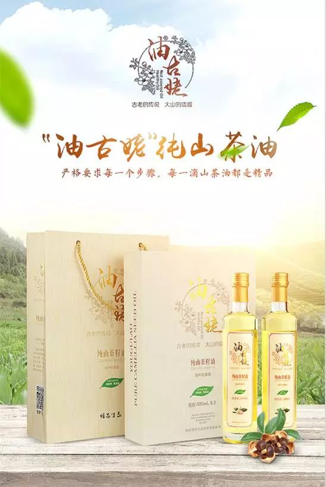

人生三大件：食、住、行；食，自然是在第一位，生活原生态，也不过是柴米油盐酱醋茶，而制作美食的过程，便是对生活最真实的感受。
现在，人们对生活品质的追求越来越重视。无论是吃、喝、穿的还是用的，都愈加追求绿色环保，有利于身心健康的。而在于吃，人们最重视的莫过于日常生活中离不开的食用油了。
一道好的美食，不在于工序多么繁杂，而在于怎样才能让食物的原香原味发挥到极致。用更健康的食用油做更美味的食物，即使最简单的调味搭配，也能升华出万般鲜香，开启健康美味生活。

“油古姥”纯山茶油
醇自天然，本色生活
健康美味源自更健康的食用油
正宗产地，品质优良。湖南永州新田县——茶油之乡；“油古姥”的第一步就从这里开始了，10多万亩农户有机油茶供应基地，4个种植核心基地，2个公司以及农户种植合作社；在这里，有充足阳光的照耀，肥沃土壤的培育，优质山泉水的灌溉，还有老茶农多年的种植经验结合公司的不断研究创新，才有了高营养、更健康的“油古姥”纯山茶油。
传统工艺，匠心制造。“油古姥”的每一个制作步骤都有自己的严格要求：油茶籽成熟后，每一颗都是人工采摘、精心挑选、剔除不良果实，随后经验收、计量、烘干及冷却后储存在0℃~30℃的温度环境中；榨取前做脱壳处理，将油茶籽进行仁壳分离；而后，“油古姥”沿用传统油坊千百年传承下来的冷榨方法榨取毛油，结合国际先进工艺——物理冷榨而成，避免了高温榨取引起的有效成分损失、油品质量损坏而致使茶油颜色污浊变深。
采用物理冷榨成功榨取的茶油清亮透澈，生产过程中不浸出、不调和、不添加，真正的绿色天然食用油。
生而不凡，美味健康
山茶油本身就是中国最古老的木本食用植物油之一，更是“食疗专家”。它可以降低人体中甘油三酯、总胆固醇和低密度脂蛋白胆固醇(一种"坏"胆固醇)的含量，使高密度脂蛋白胆固醇(一种"好"胆固醇)含量上升，这些综合作用对预防心血管疾病最为有利；而其高含量的单不饱和脂肪酸能够清除血管中的胆固醇，促进血液循环，预防动脉硬化；还有助于提高消化系统的功能，缓解肠胃疾病；同时具有较强的抗氧化性能，能激活抗氧化酶，清除自由基，保护免疫系统，增强免疫力。可谓老少皆宜，吃出健康。
除以上的优良品质外，“油古姥”达到230°的冒烟点，高出普通油的一倍，在正常的煎、炒等烹饪方式下都极少产生油烟，从根源上防止苯并芘等致癌物质进入人体内，更贴心，更放心。
据调查统计，中国目前纯茶油的产量只够不到1%的人食用，为此，明昌生态以创新科技打造，将匠心融于生活，旨在用更高品质的食用油为您开启更健康的美好生活。“油古姥”纯山茶油苏宁众筹首发，登录苏宁众筹搜索：“油古姥”纯山茶油，即可进入关注支持！
各大渠道同步推送

今日头条

西祠胡同
都市圈
17推论坛
中国贴吧